This table reports the evaluation results for the Object Boundary Detection feature from Module 3, comparing the detected boundaries against across 10 distinct variations.
| ID | Original Image | Detected Boundary | Variation Notes |
|---|---|---|---|
| V1 | 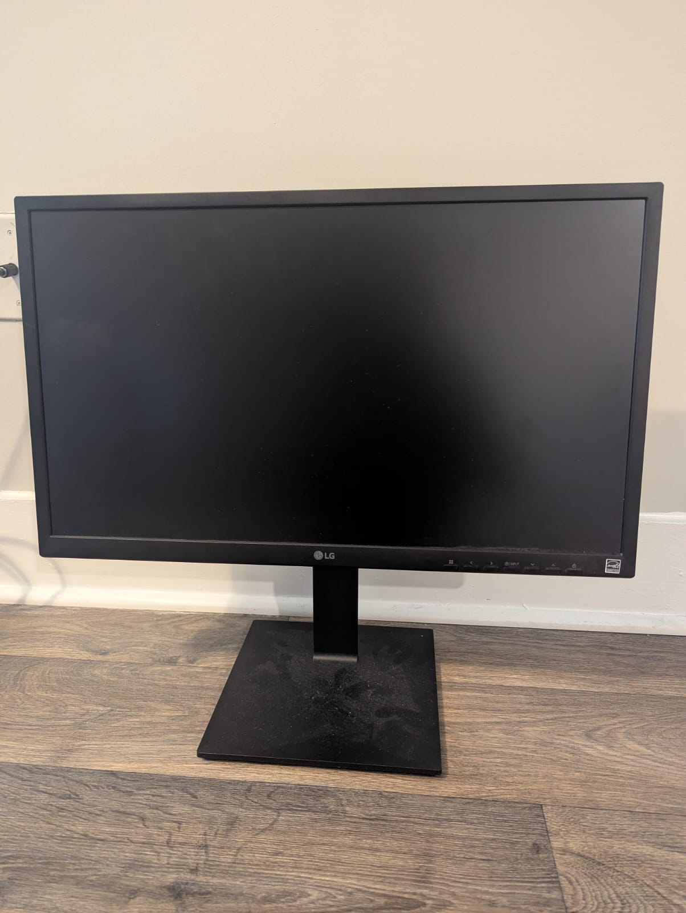 | 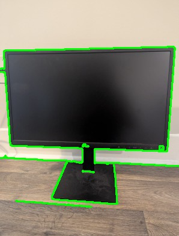 | Simple geometric shape, high overall contrast, and clear lighting conditions. |
| V2 |  |
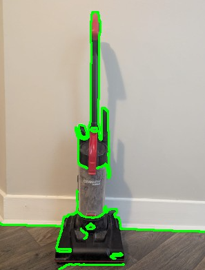 | Complex, non-uniform shape with many internal features. Primary boundary has low contrast against the dark floor, leading to high potential for segmentation errors. |
| V3 | 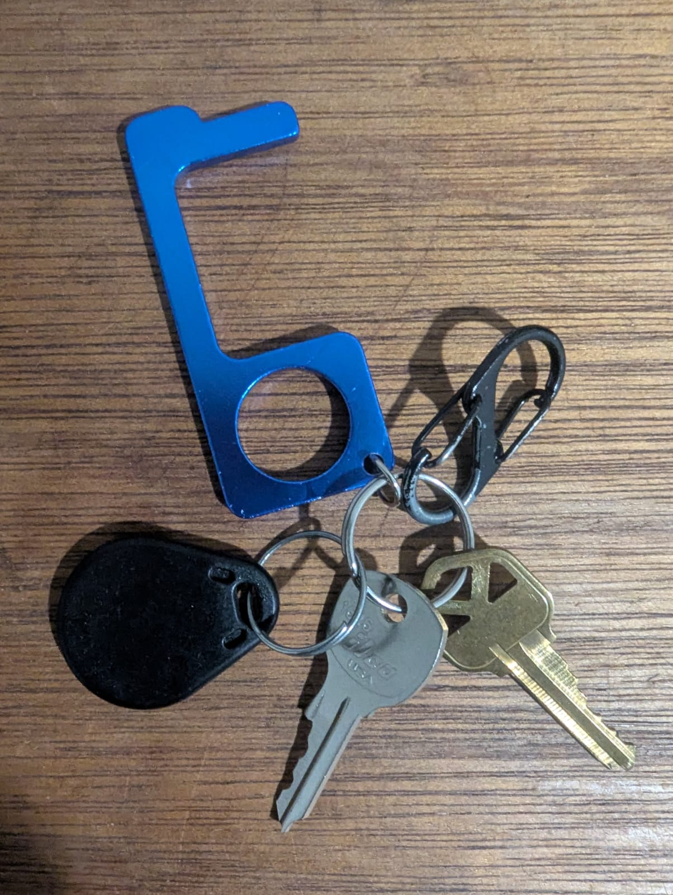 | 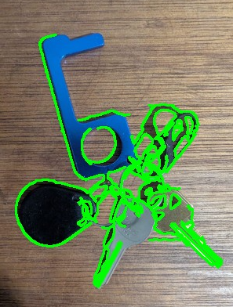 | Multiple, highly overlapping objects with complex, non-geometric shapes. Boundary detection is severely challenged by occlusion, cast shadows, and specular highlights. |
| V4 |  |
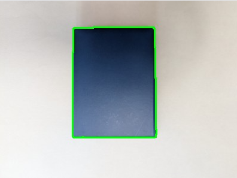 | Simple geometric shape, but low luminance contrast between the dark object and light background is complicated by the presence of a soft, diffuse shadow around the perimeter. |
| V5 | 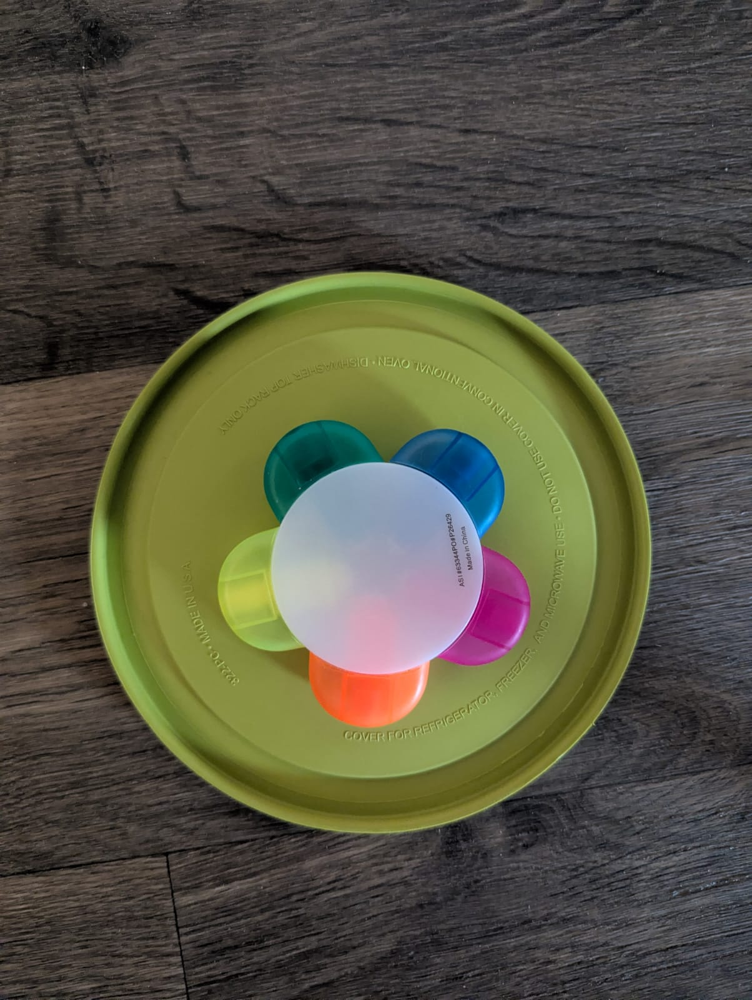 | 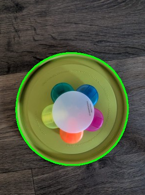 | Low contrast primary object (green lid) against the dark background, compounded by significant occlusion and high-contrast internal boundaries from the overlaying object. |
| V6 |  |
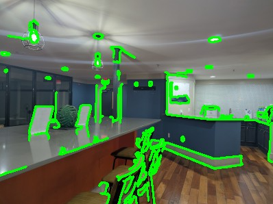 | Complex scene with severe challenges from the object's highly reflective surface, which merges the object boundary with its reflection. Internal grooved texture and partial occlusion also complicate detection. |
| V7 | 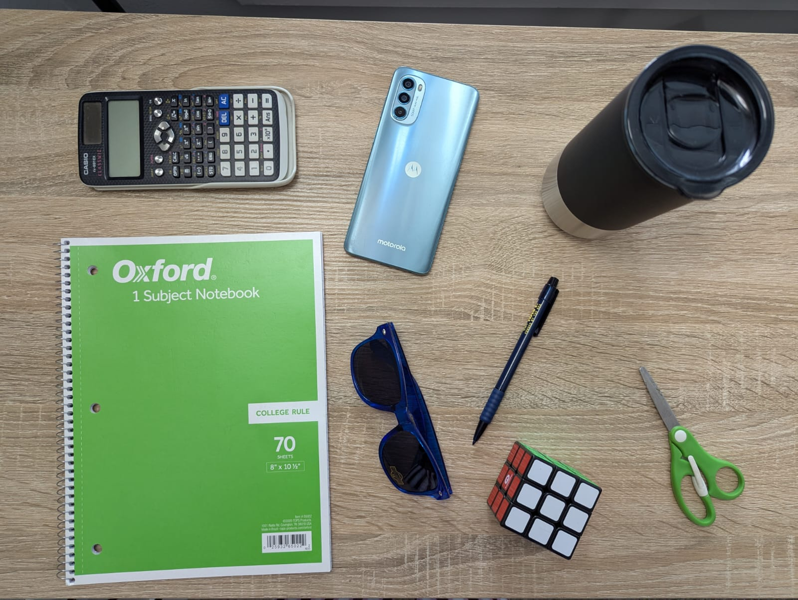 | 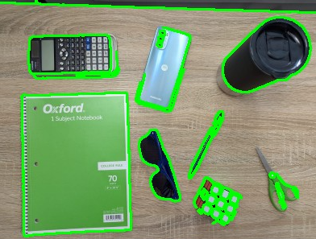 | A complex scene requiring multi-object detection, featuring high variation in object shape and material, and a textured background that introduces significant false-edge noise. |
| V8 |  |
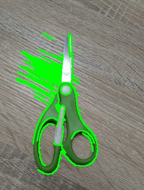 | Complex, non-contiguous shape with internal holes, featuring highly reflective metal blades and varying material contrasts, placed on a subtly textured background. |
| V9 |  |
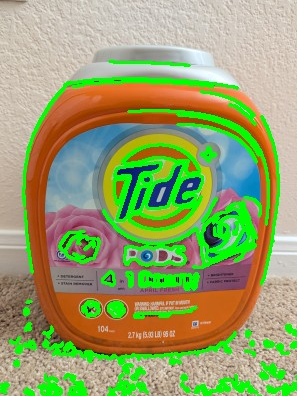 | Rounded, irregular shape with low-contrast boundaries against both the wall (top) and the highly textured carpet (bottom). High-contrast internal label features add noise and distraction. |
| V10 |  |
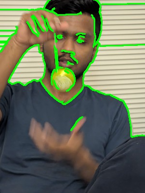 | Object is subject to severe motion blur, making the boundary ambiguous. Detection is further complicated by low contrast against the dark shirt and occlusion by a thin, high-contrast string. |